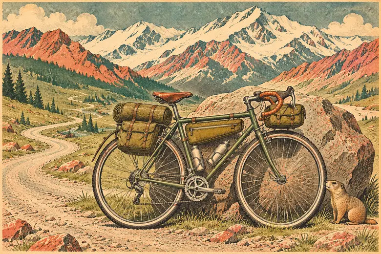

Подбор велосипеда и деталей для поездок с багажом. В каталоге — доступные рамы и редкие модели китайских производителей.
«Палатку взяли. А место для велосипедиста оставили?»

ВЫПУСК ОТ 23 НОЯБРЯ 2026
Влад Подофёдов выиграл парный зачёт Silk Road Mountain Race, Антон Коллегин взял бронзу на Tour of Orto-Sai, а Taurus остановили из-за непогоды.